git2docs · run record · 15 November 2026
A complete pass over one repository, from git clone to locked and published — told as the handoff it actually is. Two systems do the work: Claude Code reads the code and argues with the docs; git2docs holds the inputs, writes the pages and keeps score. Neither finishes the job alone.
Runs in your terminal, against your checkout. It reads the source, executes the examples, writes the anchored facts, and files findings. It never edits a published page.
Holds the repository, the product identity and the committed facts. It generates every page, collects findings into one patch, tracks convergence, and decides nothing on its own.
Claude Code
Claude Code writes CLAUDE.md at the repo root: what npm test runs, how chained
styles like chalk.red.bold are built once and cached, why files starting with _
are helper scripts rather than tests, and the Node ≥ 22 requirement.
This step is for the agent, not for git2docs — but everything the agent later knows about the codebase starts here.
git2docs
Repositories → Add repos from GitHub, then grant the GitHub App access to
your-org/chalk.
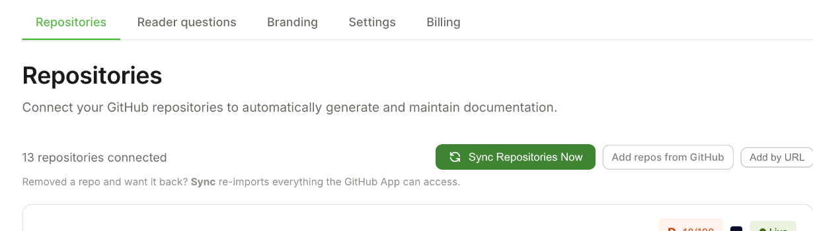
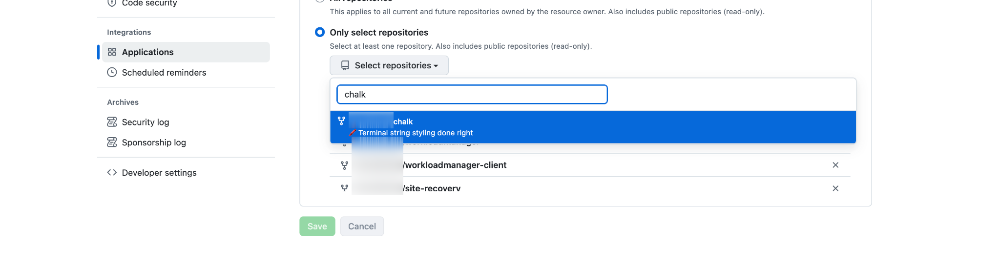
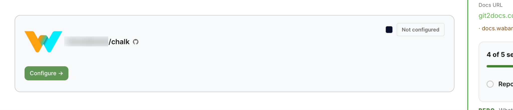
git2docs
Anchored facts: Not set. These are the exact names, namespaces and compatibility claims no extractor can read from source. git2docs does not guess them. It gives you the sentence to paste into Claude Code instead.
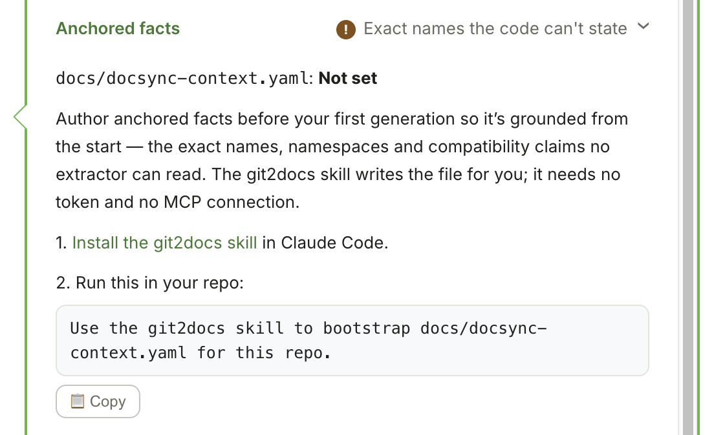
Claude Code
Written from the checkout alone, before a single page exists. Grounding the first draft beats correcting it afterwards.
git2docs
Product name, one-line description, theme. These are inputs to the synthesizer, not decoration — the name you type here is the name that appears in every page summary.
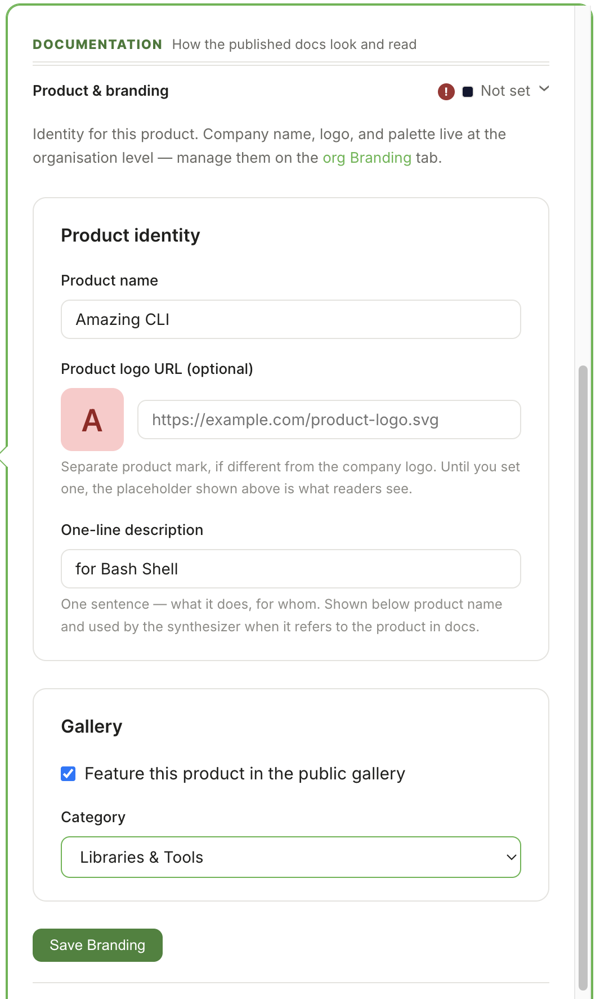
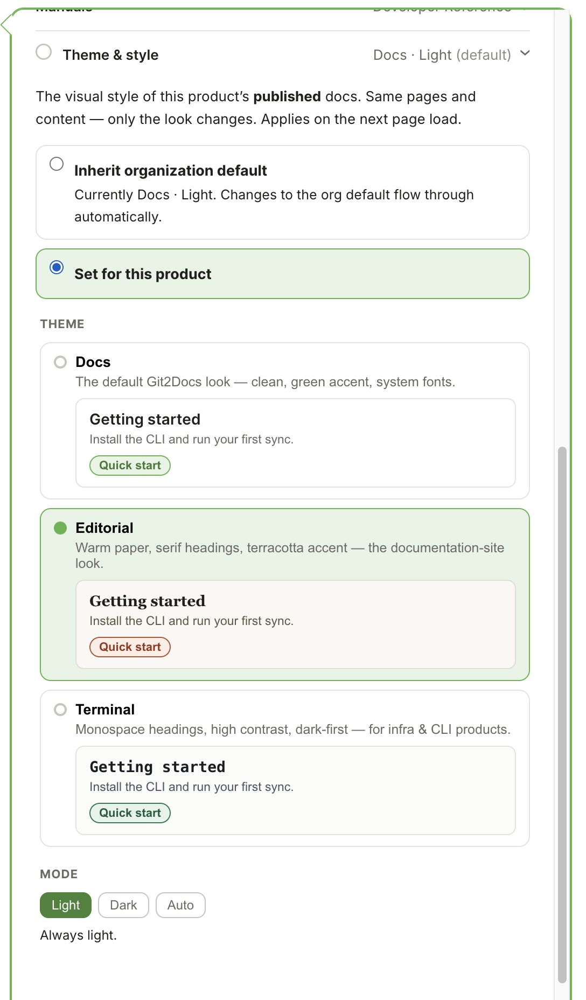
Keep this card in mind. Both values are placeholders, and four passes later the agent will report them back as a defect it cannot fix from the terminal.
git2docs
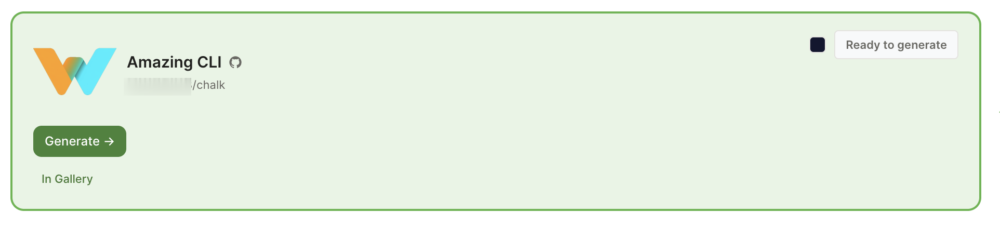
Pick main, choose Validate with an AI agent over Edit it myself, and press
Generate. The four-step path appears: generate → validate → review & apply → re-validate until clean.
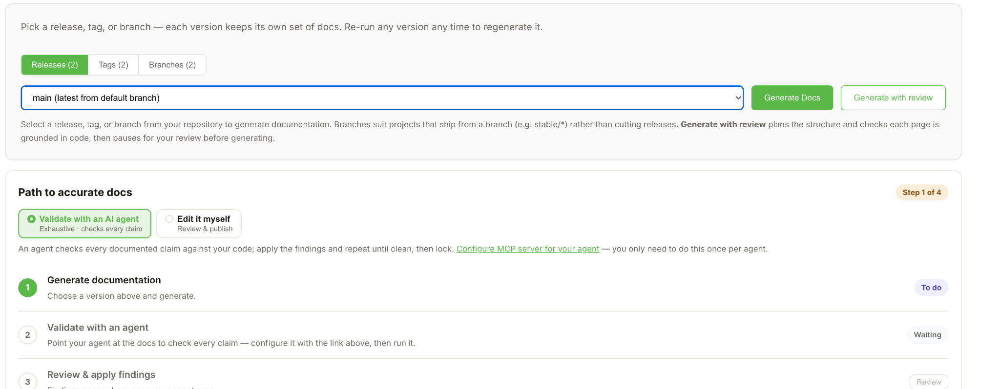
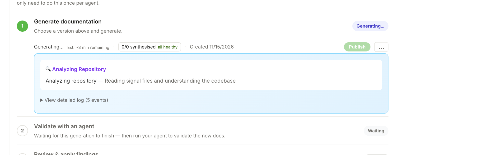
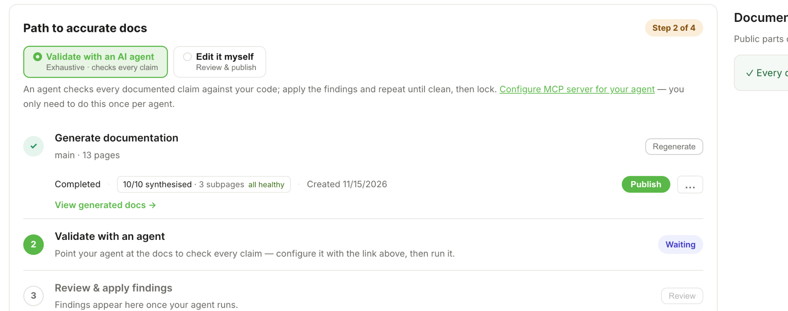
git2docs
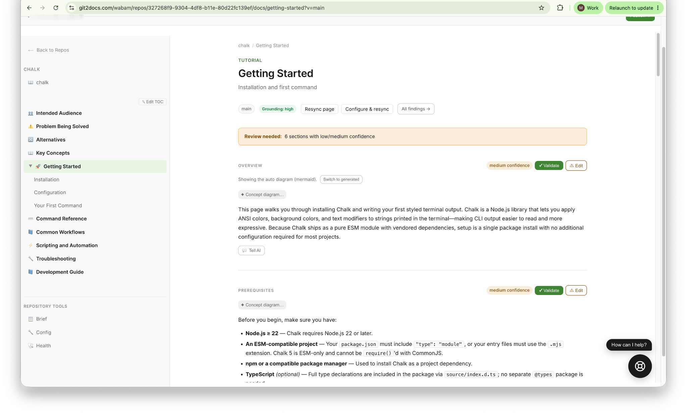
Read the Prerequisites list in that screenshot: “Chalk 5 is ESM-only and cannot be
require()’d with CommonJS.” It came from readme.md:42, it is stale, and nothing
on this page knows that yet. This is what validation is for.
git2docs
One-time MCP setup, scoped to the organisation: install the skill, generate a token, copy the server URL. The token is shown once.
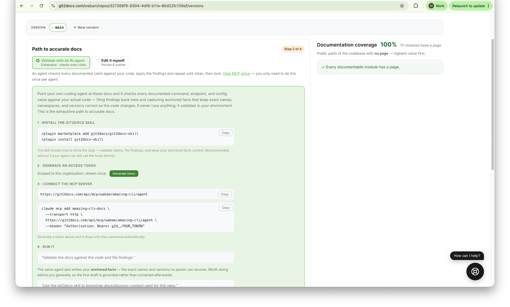
Claude Code
Pass 1 result: all 13 pages, 78 sections. 19 findings, 1 anchored fact, 3 table-of-contents proposals. Session closed with a regenerate recommendation.
source/ reads it.chalk`…`) appears on about eight pages. That
feature lives in the separate chalk-template package — an anchored fact was staged so future
regenerations stop inventing it.readme.md:42. No findings
filed: fixing the readme line is the lasting fix.FORCE_COLOR overrides
--no-color, and provider detection only applies when output is a TTY.Every runnable example was executed; colour-detection claims were tested in a clean environment and in a real terminal.
Claude Code
Commit 4847b89 on docs/docsync-context: readme.md:42 rewritten, and two
new api entries in docsync-context.yaml — tagged-templates and
base-function-join, each pointing at the line that proves it. All 25 facts still resolve after
the edit, none ambiguous.
The readme line was fixed in the repository rather than filed as eight page findings. A finding repairs a page; a source fix repairs every future generation of it.
git2docs
22 open items on the Findings page: the 19 findings plus 3 proposed changes to the table of contents. Review consolidates them into one patch against the brief, so the editor never has to be opened.
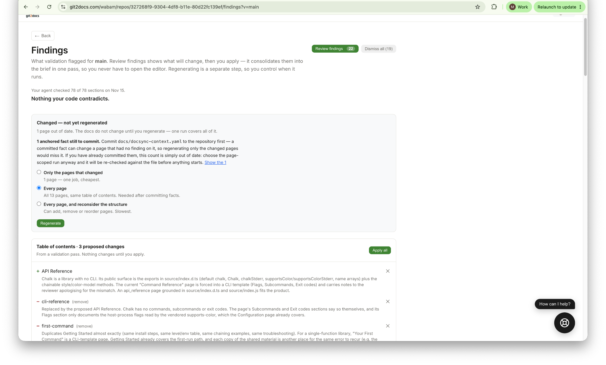
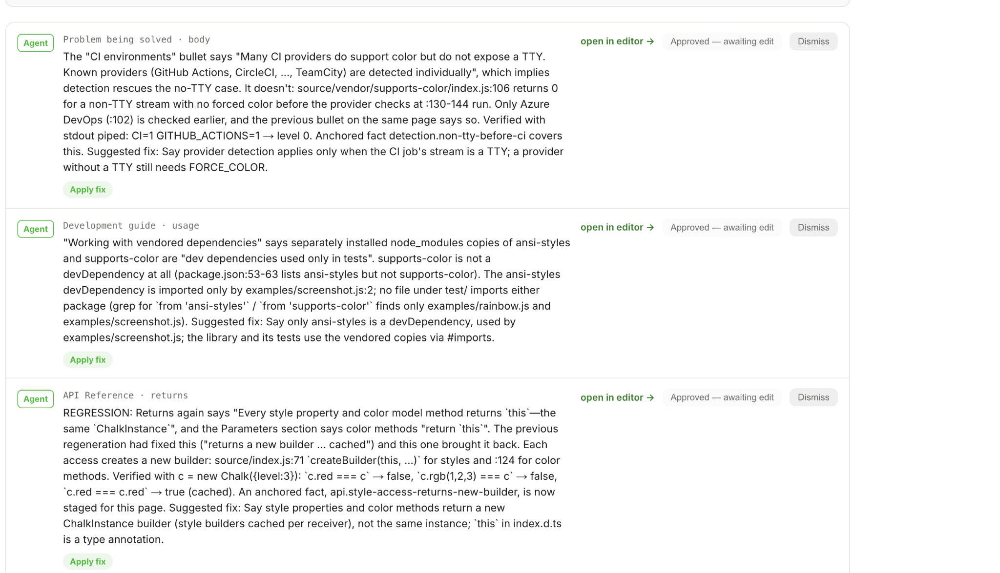
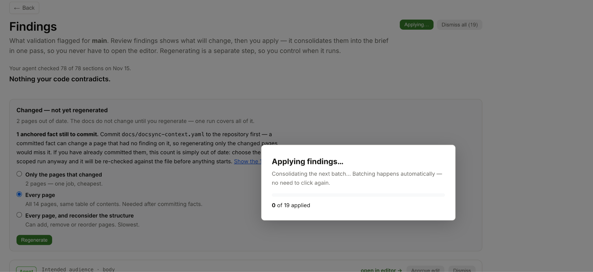
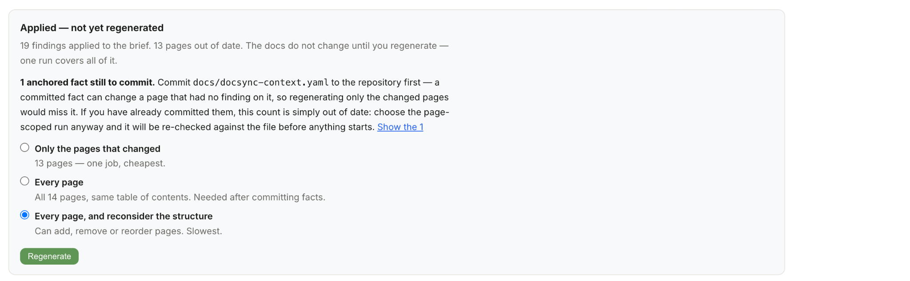
git2docs
Four passes, each one re-run against freshly generated pages: 19 → 9 → 7 → 3.
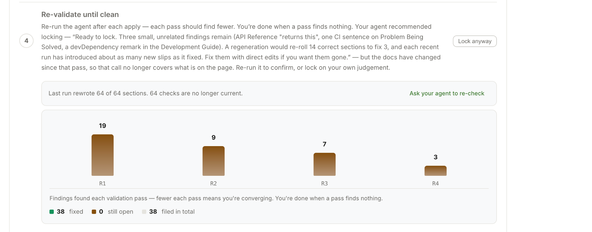
The chart also carries a warning worth reading: “Last run rewrote 64 of 64 sections. 64 checks are no longer current.” A regeneration invalidates the validation that preceded it.
Claude Code
Pass 4: 12 pages, 70 sections, checked against main at e17cb03. Three small
errors remain, all minor and unrelated.
The agent recommended lock rather than another run, and gave its reasoning rather than a verdict:
“Another run would rewrite 17 sections to fix these 3, re-rolling 14 that are correct today. Each recent run has introduced roughly as many new errors as it fixed. If you want the three gone, I can edit those three sections directly — but those sections then stop updating from the code, so I’ll only do it with your OK.”
git2docs
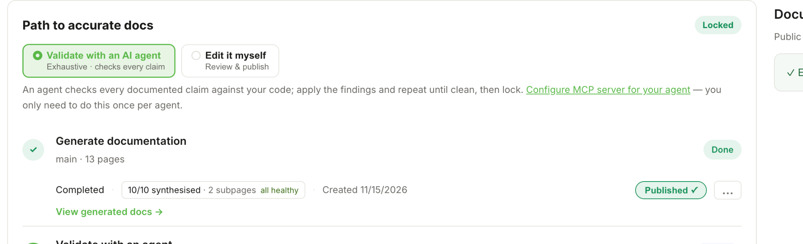
Five crossings in the whole run. Each one is a specific artifact moving in a specific direction — never a system reaching into the other’s territory.
| # | Direction | What crossed | Why it crosses rather than stays |
|---|---|---|---|
| A | git2docs → Claude Code |
A prompt string from the Configure hub | git2docs cannot read exact names, namespaces or compatibility claims out of source. It asks for them instead of inferring them. |
| B | Claude Code → git2docs |
docs/docsync-context.yaml, committed to the repo |
The facts live in version control, beside the code they describe, so they travel with the branch and can be reviewed like code. |
| C | git2docs → Claude Code |
MCP endpoint + org-scoped bearer token | The agent validates in your environment against your checkout. git2docs never runs your code; it only receives what the agent found. |
| D | Claude Code → git2docs |
19 findings, 1 anchored fact, 3 TOC proposals | Findings are evidence, not edits. They queue for review, consolidate into one patch, and change nothing until a person applies them. |
| E | Claude Code → git2docs |
A lock recommendation, with reasoning | The agent can say a pass found nothing worth another run. It cannot decide that the release is ready to ship. |
Three things worth keeping from a run that ended clean.
The product is named “Amazing CLI” with the one-liner “for Bash Shell”, and several page summaries duly described a CLI tool with a binary download. Chalk is a library with no CLI.
The agent identified it precisely and reported where the fix had to happen: “Those come from the product settings in git2docs, so you’ll need to change them there.” A terminal-side agent cannot reach a web-side input — which is exactly why step 5 above is worth getting right the first time.
At pass 4 the API Reference went back to claiming that style properties return this, the same
ChalkInstance. An earlier pass had already fixed it; a later regeneration re-rolled it.
Verified by running it: c.red === c → false. Each access creates a new builder
(source/index.js:71), cached per receiver. The loop caught its own regression — which is the
argument for re-validating after every apply rather than trusting a clean pass.
Eight pages repeated the stale “use Chalk 4” advice. The agent filed zero findings for it and
edited readme.md:42 instead.
Eight findings would have corrected eight pages once. One readme line corrects every regeneration from here on.
19 → 9 → 7 → 3 is the shape you want. A flat line means the applies aren’t landing; a rising line means regeneration is costing more than it fixes.
At 3 remaining, the agent argued the next run would re-roll 14 correct sections to fix 3 — and said so instead of running it.
The source document pasted the contents of .mcp.json including a live git2docs bearer token.
It is masked here. That token is valid, organisation-scoped, and should be rotated — and anyone holding a copy
of the original document holds the credential too.